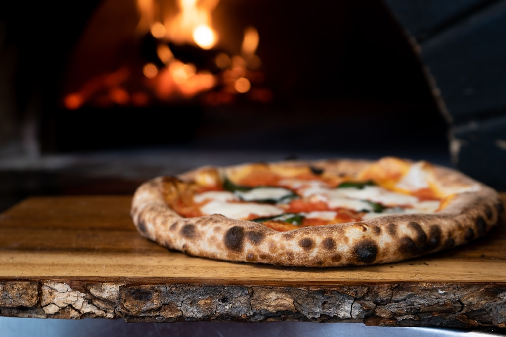
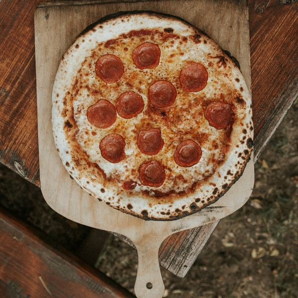
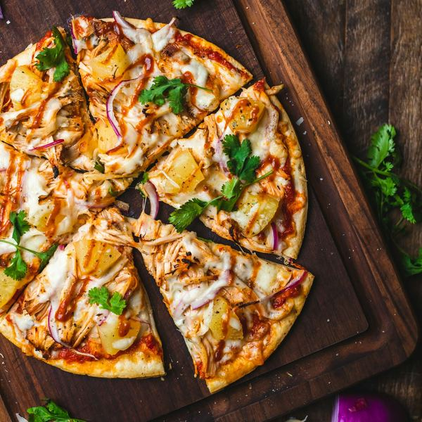
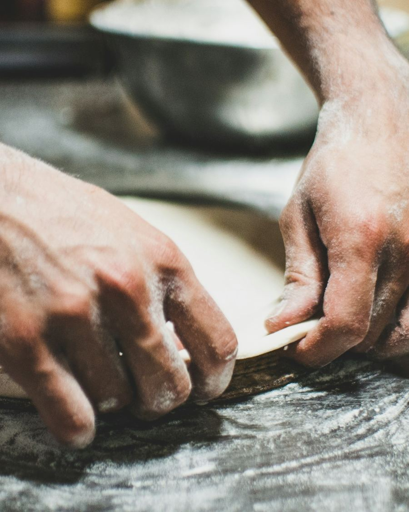

Desde 1998 · Forno a lenha
Fogo de verdade.
Pressa nenhuma na massa.
Fermentação de 24 horas, forno a lenha e entrega em até 40 minutos. A gente demora onde importa.
4,9 1.247 avaliações Entrega em até 40 min
Como a gente trabalha
-
Massa de 24 horas
Fermentação natural. Sem atalho.
-
Forno a lenha
Piso de pedra, 400 graus.
-
40 minutos ou menos
Num raio de 5 km.
Mais pedidas
As seis que saem sem parar
-
Mais pedida

Calabresa
R$ 58
Calabresa artesanal, cebola roxa, orégano.
-

Margherita
R$ 54
Molho de tomate italiano, mussarela, manjericão.
-

Frango com requeijão
R$ 62
Frango desfiado, requeijão cremoso, cebola roxa.
-

Quatro queijos
R$ 64
Mussarela, gorgonzola, parmesão, provolone.
-

Napolitana
R$ 56
Tomate em rodelas, mussarela, parmesão, orégano.
-

Búfala
R$ 72
Mussarela de búfala, tomate-cereja, manjericão.


O cardápio
Dezoito sabores, três famílias
Todas em tamanho grande, oito fatias. Borda recheada por R$ 12.
Tradicionais
6 sabores
-
Mussarela
R$ 48
Molho de tomate, mussarela, orégano.
-
Calabresa
R$ 58
Calabresa artesanal, cebola roxa, orégano.
-
Margherita
R$ 54
Molho de tomate italiano, mussarela, manjericão.
-
Portuguesa
R$ 62
Presunto, ovo, cebola, azeitona, mussarela.
-
Napolitana
R$ 56
Tomate em rodelas, mussarela, parmesão, orégano.
-
Frango com requeijão
R$ 62
Frango desfiado, requeijão cremoso, cebola roxa.
Especiais
6 sabores
-
Búfala
R$ 72
Mussarela de búfala, tomate-cereja, manjericão.
-
Quatro queijos
R$ 64
Mussarela, gorgonzola, parmesão, provolone.
-
Parma
R$ 84
Presunto de parma, rúcula, lascas de parmesão.
-
Pepperoni
R$ 68
Pepperoni italiano, mussarela, orégano.
-
Cogumelos
R$ 70
Shimeji, shiitake, champignon, alho confitado.vegetariana
-
Vegetariana
R$ 62
Abobrinha, berinjela, pimentão, tomate-cereja.vegetariana
Doces
6 sabores
-
Chocolate ao leite
R$ 52
Chocolate belga derretido na hora.
-
Chocolate com morango
R$ 58
Chocolate meio amargo, morango fresco.
-
Banana com canela
R$ 48
Banana caramelizada, canela, açúcar mascavo.
-
Romeu e Julieta
R$ 52
Goiabada cascão e queijo minas.
-
Prestígio
R$ 56
Chocolate, coco fresco, leite condensado.
-
Doce de leite
R$ 56
Doce de leite argentino com castanha-de-caju.

A casa
Um forno só, aceso desde 1998
Seu Antônio levantou este forno com as próprias mãos no fundo de uma garagem na Rua das Oliveiras. Assava trinta pizzas por noite e entregava de bicicleta.
O endereço é o mesmo. O forno é o mesmo — a gente só trocou o piso de pedra duas vezes em vinte e sete anos. Quem faz a massa hoje é a filha dele, e a fermentação continua começando na véspera.
-
27
anos no mesmo endereço
-
180 mil
pizzas saídas deste forno
-
1
forno de tijolo, o mesmo desde o primeiro dia
As vozes
1.247 avaliações.
Três delas.
-
Pedi às onze da noite achando que ia demorar. Chegou em trinta e cinco minutos e ainda estava quente na caixa.
Marina R. Vila Nova · há 2 semanas -
A borda é o motivo. Fina, com bolha, e com aquela marca preta que só forno a lenha faz.
Diego F. Centro · há 1 mês -
Meus filhos não comem em outro lugar. A gente pede toda sexta há uns seis anos.
Cláudia M. Jardim América · há 3 semanas
Antes de pedir
O que perguntam toda semana
Quanto tempo leva a entrega?
Até 40 minutos num raio de 5 km. Fora dessa área a gente calcula o tempo real e avisa antes de confirmar o pedido — nunca depois.
Qual é a taxa de entrega?
R$ 6 até 3 km e R$ 9 de 3 a 5 km. Acima de R$ 120 a entrega sai por nossa conta.
Quais formas de pagamento vocês aceitam?
Pix, dinheiro e cartão na entrega — crédito, débito e vale-refeição.
Dá para retirar no balcão?
Dá, e sai 10% mais barato. É só avisar no WhatsApp que a gente separa e manda uma mensagem quando estiver saindo do forno.
Tem opção sem glúten ou vegana?
Massa sem glúten sim, pedindo com uma hora de antecedência. Queijo vegetal a gente ainda não trabalha — prefere avisar a improvisar.
Qual o horário de funcionamento?
De terça a domingo, das 18h às 23h30. Na segunda o forno descansa.
Preciso pedir com antecedência?
Não. Mas sexta e sábado depois das 20h a fila costuma passar de uma hora, então pedir cedo muda bastante a espera.